原文连接:https://www.cnblogs.com/rope/p/10724189.html
一、Canvas基本使用
Canvas是HTML5的画布，Canvas算是“不务正业”的面向对象大总结，将面向对象玩极致。
算法为王！就是说canvas你不会，但是算法好，不怕写业务，不怕代码量，只要稍微学学API就能出活。
Canvas这里是HTML5新标签，直接要了flash的命。
1.1 Canvas简介
MDN的Canvas在线手册：
https://developer.mozilla.org/zh-CN/docs/Web/API/Canvas_API
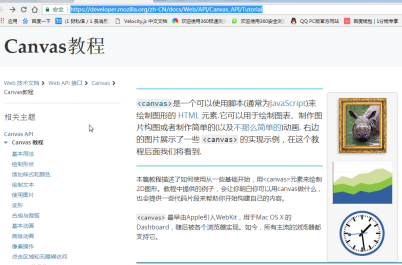
了解：
<canvas>是一个可以使用脚本(通常为JavaScript)来绘制图形的 HTML 元素.它可以用于绘制图表、制作图片构图或者制作简单的(以及不那么简单的)动画. 右边的图片展示了一些 <canvas> 的实现示例。
历史：
<canvas> 最早由Apple引入WebKit，用于Mac OS X 的 Dashboard，随后被各个浏览器实现。如今，所有主流的浏览器都支持它。
Mozilla 程序从 Gecko 1.8 (Firefox 1.5) 开始支持 <canvas>。它首先是由 Apple 引入的，用于 OS X Dashboard 和 Safari。Internet Explorer 从IE9开始支持<canvas> ，更旧版本的IE可以引入 Google 的 Explorer Canvas 项目中的脚本来获得<canvas>支持。Chrome和Opera 9+ 也支持 <canvas>。
Canvas兼容到IE9。
1.2 Canvas入门
canvas是HTML5中比较特殊的双标签，可以在body中放：
<html>
<head>
<meta charset="UTF-8" />
<title>Document</title>
<style type="text/css">
canvas{border:1px solid #000;}
</style>
</head>
<body>
<canvas width="600" height="400"></canvas>
</body>
</html>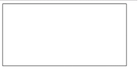
不能将width、height在CSS中设置，否则画布的像素的会被缩放，画面质量粗糙了。
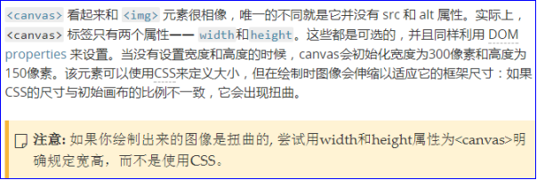
<canvas>元素可以像任何一个普通的图像一样（有margin，border，background等等属性）被设计。然而，这些样式不会影响在canvas中的实际图像。
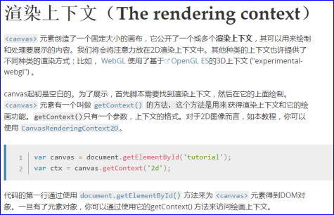
画布没什么用，所有操作都要在“上下文”中进行，这里的上下文是环境的意思，不是面向对象中的this。
<script type="text/javascript">
//得到画布标签
var canvas = document.querySelector("canvas");
//使用上下文，得到一个2D的画布
var ctx = canvas.getContext("2d");
//画画
ctx.fillRect(100, 100, 300, 100);
</script>Canvas的本质就是用js来画画，所有的绘画函数，都是ctx的方法。
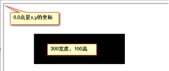
canvas马上开始面对一堆API：
<script type="text/javascript">
//得到画布标签
var canvas = document.querySelector("canvas");
//使用上下文，得到一个2D的画布
var ctx = canvas.getContext("2d");
//绘制矩形
ctx.fillStyle = "orange"; //先提供一个颜色的笔
ctx.fillRect(100, 100, 300, 100); //在根据以上颜色填充
ctx.fillStyle = "green"; //先提供一个颜色的笔
ctx.fillRect(100, 200, 300, 200); //在根据以上颜色填充
</script>
Canvas的坐标系和绝对定位的坐标系是一样的。
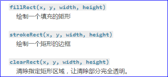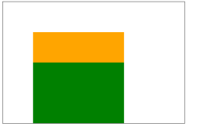
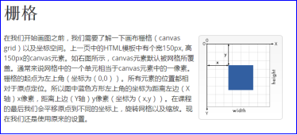
二、Canvas绘制形状
2.1绘制形状路径
在Canvas中有两种东西：
l stroke路径【笔触】，也叫描边，就是形状的轮廓
l fill填充，就是里面的颜色
//得到画布标签
var canvas = document.querySelector('canvas');
//使用上下文，得到一个2D画布
var ctx = canvas.getContext("2d");
//画画
ctx.beginPath(); //声明要开始绘制路径
ctx.moveTo(100,100); //移动到绘制点，将“画笔”移动到100,100的位置
ctx.lineTo(250,250); //划线
ctx.lineTo(500,250); //划线
ctx.lineWidth = 10; //线的粗细
ctx.strokeStyle = "red"; //线的颜色
ctx.fillStyle = "blue"; //准备填充的颜色
ctx.closePath(); //闭合路径（自动补全）
ctx.stroke(); //显示线（绘制线），可以绘制的路径显示出来
ctx.fill(); //填充颜色只有矩形有快捷方法，比如想绘制多边形，都要用以上这些组合。
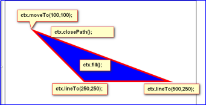
2.2绘制矩形
ctx.fillRect(x,y,w,h); //绘制填充矩形
ctx.strokeRect(x,y,w,h); //绘制路径矩形
绘制调色板：
var canvas = document.querySelector('canvas');
var ctx = canvas.getContext("2d");
for (var i = 0;i < 6;i++){
for (var j = 0;j < 6;j++){
ctx.fillStyle = 'rgba('+ Math.floor(255-42.5 * i) +','+ Math.floor(255-42.5 * j) +', 200)';
ctx.fillRect(i * 25, j * 25, 25, 25);
}
}记住一句话：Canvas是不可逆，绘制的元素一旦上了屏幕，是无法针对它再次操作。
2.3绘制弧度
ctx.arc(圆心x, 圆心y, 半径, 开始的弧度, 结束的弧度, 是否逆时针);
ctx.beginPath(); //开始绘制路径
// ctx.arc(100, 100, 60, 0, 6.28, false);
ctx.arc(100, 100, 60, 0, Math.PI * 2, false);
ctx.stroke(); //显示路径线切一个圆，让切下来的弧边长等于圆的半径，此时弧对应的角度是57.3度左右，此时角度是固定的。
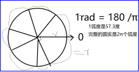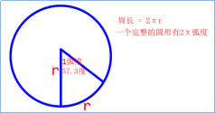
正方向是正右方
在canvas中所有涉及角度的坐标系有两点注意的：
l 0弧度的方向是正右方向。
弧度的顺时针和逆时针：
ctx.arc(100,100,60, 0, 3, false); //绘制圆弧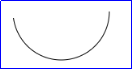
ctx.arc(100,100,60, 0, 1, true); //绘制圆弧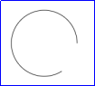
绘制圆形：
ctx.arc(100,100,60, 0, Math.PI * 2, false);
ctx.arc(100,100,60, 0, 6.28, false);
ctx.arc(100, 100, 60, 0, -6.28, true);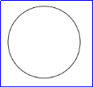
注意：x和y坐标是到圆心的位置，而且圆的大小是半径，后面绘制的形状会覆盖前面的形状。
绘制笑脸


<script type="text/javascript">
var canvas = document.querySelector("canvas");
var ctx = canvas.getContext("2d");
//绘制大脸
ctx.beginPath(); //开始绘制路径
ctx.arc(300,200, 160, 0, 6.28, false); //绘制圆弧
ctx.stroke(); //显示路径线
ctx.fillStyle = "brown";
ctx.fill();
//绘制左眼睛
ctx.beginPath();
ctx.arc(230,150, 30, 0, 6.28, false);
ctx.stroke();
ctx.fillStyle = "orange";
ctx.fill();
//绘制右眼睛
ctx.beginPath();
ctx.arc(370,150, 30, 0, 6.28, false);
ctx.stroke();
ctx.fillStyle = "blue";
ctx.fill();
//绘制嘴巴
ctx.beginPath();
ctx.arc(300,160, 120, 0.5, 2.6, false);
ctx.lineWidth = 10;
ctx.stroke();
</script>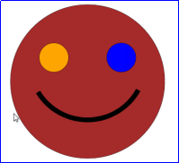
三、使用图片
3.1图片基本使用
canvas中不可能所有形状都自己画，一定是设计师给我们素材，然后使用。
canvas中使用图片的方法：注意，必须等img完全加载后才能呈递图片。
ctx.drawImage();
var canvas = document.querySelector('canvas');
var ctx = canvas.getContext("2d");
//创建一个img标签
var image = new Image()
//设置图片的路径
image.src = "images/baby1.jpg";
//当图片成功加载，就画图（上屏幕）
image.onload = function(){
//显示图片的API
ctx.drawImage(image, 100, 100); //表示x和y坐标
}3.2使用切片
如果2个数字参数，此时表示左上角位置的x和y坐标：
ctx.drawImage(img,100,100);
ctx.drawImage(img图片对象,画布X,画布Y);如果4个数字参数，此时表示x、y、w、h：
ctx.drawImage(img图片对象, 画布X,画布Y,图片W,图片H);如果8个数字参数，此时表示：
ctx.drawImage(img,切片X,切片Y,切片W,切片H,画布X,画布Y,图片W,图片H);//创建一个img标签
var image = new Image()
//设置图片的路径
image.src = "images/baby1.jpg";
//当图片成功加载，就画图（上屏幕）
image.onload = function(){
//显示图片的API
// ctx.drawImage(image, 100, 100); //表示x和y坐标
// ctx.drawImage(image, 100, 100, 150, 150); //表示x和y坐标
// ctx.drawImage(img,切片X,切片Y,切片W,切片H,画布X,画布Y,图片W,图片H);
ctx.drawImage(image, 108, 200, 145, 120, 100, 100, 145, 120);
}图片API：https://developer.mozilla.org/zh-CN/docs/Web/API/Canvas_API/Tutorial/Using_images
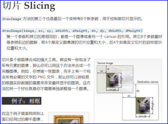
3.3简易的图片加载器
var canvas = document.querySelector('canvas');
var ctx = canvas.getContext("2d");
var R = {
"0":"images/d1.jpg",
"1":"images/d2.jpg",
"2":"images/d3.jpg"
}
var arr = [];
for(var k in R){
arr[k] = new Image(); //创建img对象
arr[k].src = R[k]; //设置图片地址
// 当图片成功加载，就画图（上屏幕）
arr[k].onload = function(){
ctx.drawImage(arr[k], 50, 50)
}
}3.4显示GIF动态图
HTML代码：
<img id="testImg" src="xxx.gif" width="224" height="126">
<p><input type="button" id="testBtn" value="停止"></p>if ('getContext' in document.createElement('canvas')) {
HTMLImageElement.prototype.play = function() {
if (this.storeCanvas) {
// 移除存储的canvas
this.storeCanvas.parentElement.removeChild(this.storeCanvas);
this.storeCanvas = null;
// 透明度还原
image.style.opacity = '';
}
if (this.storeUrl) {
this.src = this.storeUrl;
}
};
HTMLImageElement.prototype.stop = function() {
var canvas = document.createElement('canvas');
// 尺寸
var width = this.width, height = this.height;
if (width && height) {
// 存储之前的地址
if (!this.storeUrl) {
this.storeUrl = this.src;
}
// canvas大小
canvas.width = width;
canvas.height = height;
// 绘制图片帧（第一帧）
canvas.getContext('2d').drawImage(this, 0, 0, width, height);
// 重置当前图片
try {
this.src = canvas.toDataURL("image/gif");
} catch(e) {
// 跨域
this.removeAttribute('src');
// 载入canvas元素
canvas.style.position = 'absolute';
// 前面插入图片
this.parentElement.insertBefore(canvas, this);
// 隐藏原图
this.style.opacity = '0';
// 存储canvas
this.storeCanvas = canvas;
}
}
};
}
var image = document.getElementById("testImg"),
button = document.getElementById("testBtn");
if (image && button) {
button.onclick = function() {
if (this.value == '停止') {
image.stop();
this.value = '播放';
} else {
image.play();
this.value = '停止';
}
};
}3.5游戏图片资源加载器
//得到画布
var canvas = document.querySelector("canvas");
// 使用上下文，得到一个2D的画布
var ctx = canvas.getContext("2d");
//资源文件
var R = {
"d1" : "images/d1.jpg",
"d2" : "images/d2.jpg",
"d3" : "images/d3.jpg"
}
//遍历这个对象，将他们的地址变为真实图片地址
var count = 0; //已成功加载的图片个数
var length = Object.keys(R).length; //所有图片的总数
for(var k in R){
//创建image对象
var image = new Image();
//设置src图片路径
image.src = R[k];
//将R里面的资源文件，变为真正的图片对象
R[k] = image;
//当image加载成功后，显示图片在画布上
image.onload = function(){
count++; //当某张图片加载成功，给计数器+1
ctx.clearRect(0,0,600,600)
//绘制文本，提升用户体验，提示加载的进度
//填充文字API
ctx.textAlign = "center";
ctx.font = "30px 微软雅黑";
ctx.fillText("正在加载图片：" + count + "/" + length, canvas.width / 2,50)
//当加载完毕，开始游戏
if(count == length){
//开始游戏的回调函数
ctx.clearRect(0,0,600,600)
start();
}
}
}
// 开始游戏的函数
function start(){
ctx.drawImage(R["d1"],100,100);
ctx.drawImage(R["d2"],0,100);
ctx.drawImage(R["d3"],300,200);
}四、画布的变形
4.1 translate移动变形
translate()移动画布，rotate()旋转画布。
canvas中不能只移动某一个对象，移动的都是整个画布。
canvas中不能只旋转某一个对象，旋转的都是整个画布。
但是可以用save()、restore()来巧妙设置，实现让某一个元素进行移动和旋转。
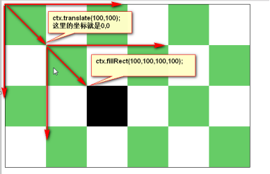
var canvas = document.querySelector('canvas');
var ctx = canvas.getContext("2d");
ctx.translate(100, 100); //将画布移动，坐标系就发生变化了
ctx.fillRect(100, 100, 100, 100); //相对于移动后的坐标系开始画画
移动变形、移动的是整个画布、而不是某个元素，在ctx.translate()之后绘制的语句都将被影响。
var canvas = document.querySelector('canvas');
var ctx = canvas.getContext("2d");
ctx.translate(100, 100); //将画布移动，坐标系就发生变化了
ctx.fillRect(100, 100, 100, 100); //相对于移动后的坐标系开始画画
ctx.beginPath();
ctx.arc(100,100, 100, 0, 6.28, false);
ctx.fillStyle = 'skyblue';
ctx.fill();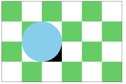
4.2 save()保存和restore()恢复
ctx.save()表示保存上下文的物理性质，ctx.restore()表示恢复最近一次的保存。
save表示保存sava函数之前的状态，restore表示获取save保存的状态。
移动了的元素，会影响不需要移动圆点坐标的元素，所以可以使用以上两个方法保存起来，可以解决让某一个元素移动变形不受影响。
var canvas = document.querySelector('canvas');
var ctx = canvas.getContext("2d");
ctx.save();
ctx.translate(100, 100); //将画布移动，坐标系就发生变化了
ctx.fillRect(100, 100, 100, 100); //相对于移动后的坐标系开始画画
ctx.restore();
ctx.beginPath();
ctx.arc(100,100, 100, 0, 6.28, false);
ctx.fillStyle = 'skyblue';
ctx.fill();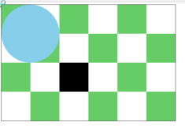
4.3 rotate()旋转变形
旋转的是整个坐标系，坐标系以0,0点为中心点进行旋转。
rotate(1)的参数，是弧度，旋转的也不是矩形，而是画布。
var canvas = document.querySelector("canvas");
var ctx = canvas.getContext("2d");
ctx.rotate(1); //1表示57.3度（1弧度）
ctx.fillRect(100, 100, 100, 100); //相对于旋转后的坐标系开始画画
如果想旋转某一个元素，必须将坐标轴原点，放到要旋转的元素身上，然后再旋转。
ctx.save();
ctx.translate(150,150)
ctx.rotate(1); //1表示57.3度（1弧度）
ctx.fillRect(-50, -50, 100, 100); //相对于旋转后的坐标系开始画画
ctx.restore();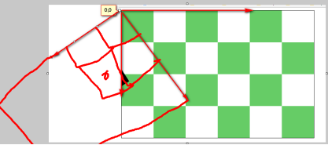
坐标系移动到物体的中心点，物体以负半宽、半高、为x，y绘制。
function Box(){
this.x = 150;
this.y = 150;
this.w = 100;
this.h = 100;
this.deg = 0;
}
Box.prototype.render = function(){
ctx.save()
ctx.translate(this.x,this.y)
ctx.rotate(this.deg);
ctx.fillRect(-this.w / 2,-this.h / 2,this.w,this.h);
ctx.restore()
}
Box.prototype.update = function(){
this.deg += 0.2;
}
var b = new Box();
b.render();
setInterval(function(){
ctx.clearRect(0,0,600,400)
b.update();
b.render();
},20);globalCompositeOperation
用来设置新图像和老图形如何“融合”、“裁剪”。
值有以下这些：
新图形是：source，老图形是destination
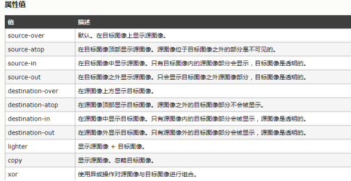
ctx.globalCompositeOperation="destination-over";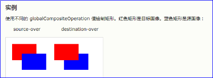
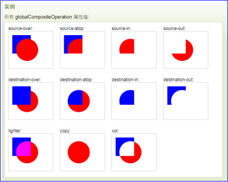
五、FlappyBird游戏
5.1游戏结构
游戏采用中介者模式开发，Game类统领全局，负责读取资源、设置定时器、维护各种演员的实例，也就是说所有的演员都是Game类new出来，当做一个子属性。
也就是，游戏项目外部就一条语句：
var game = new Game();其他的所有语句都写在Game类里面。
需要的类：
Game类： 中介者，读取资源、设置定时器、维护各种演员的实例
Bird类： 小鸟类，这个类是单例的，实例化一次
Pipe类： 管子类
Land类： 大地类
background类： 背景类<body>
<canvas width="414" height="650"></canvas>
</body>
<script type="text/javascript" src="js/lib/underscore-min.js"></script>
<script type="text/javascript" src="js/Game.js"></script>
<script type="text/javascript" src="js/Bird.js"></script>
<script type="text/javascript" src="js/Land.js"></script>
<script type="text/javascript" src="js/Pipe.js"></script>
<script type="text/javascript" src="js/Background.js"></script>5.2创建Game类：开始界面、加载资源
(function(){
window.Game = function() {
this.f = 0; //帧编号
this.init();//初始化DOM
}
Game.prototype.init = function() {
this.canvas = document.getElementById("canvas");
this.ctx = this.canvas.getContext("2d");
//R对象表示资源文件，图片总数
this.R = {
"bg_day": "images/bg_day.png",
"land": "images/land.png",
"pipe_down": "images/pipe_down.png",
"pipe_up": "images/pipe_up.png",
"bird0_0": "images/bird0_0.png",
"bird0_1": "images/bird0_1.png",
"bird0_2": "images/bird0_2.png",
}
var self = this;
//遍历对象用for in语句
//遍历这个对象，将它们变为真的图片地址
var count = 0; //计算加载好的图片总数（成功加载一张就+1）
var length = Object.keys(this.R).length; //得到图片的总数
for (var k in this.R) {
//创建一个img标签，发出图片的请求，目前img对象是孤儿节点
var img = new Image();
//将这个R[k]对象赋值给src设置图片的路径
img.src = this.R[k];
//将R里面的资源文件，改为img真的图片对象
this.R[k] = img;
//当图片加载完毕，就画图上画布（图片必须load才能上画布）
img.onload = function () {
count++; //当某张图片加载完毕，给计数器+1
//清屏
self.clear()
//绘制文本，提升用户加载到什么程度了
//save和restore方法配合使用，防止污染其他样式
self.ctx.save(); //保存状态
self.ctx.textAlign = "center";
self.ctx.font = "18px 微软雅黑";
self.ctx.fillStyle = "blue";
//填充文字
self.ctx.fillText(`加载中 ${count} / ${length}`, self.canvas.width / 2, 100);
self.ctx.restore(); //恢复保存的状态
//当加载完毕的图片总数==图片总数时，此时就开始加载图片并开始游戏
if (count == length) {
self.start(); //开始游戏的回调函数
}
}
}
}
//清屏
Game.prototype.clear = function() {
this.ctx.clearRect(0, 0, this.canvas.width, this.canvas.height)
}
// 游戏主循环
Game.prototype.start = function () {
var self = this;
this.timer = setInterval(function(){
self.f++;
// 清屏
self.clear();
//显示帧率
self.ctx.font = "16px 微软雅黑";
self.ctx.fillText(self.f,10,20);
},20);
}
})();5.3创建background.js背景类
(function () {
window.Background = function () {
this.image = game.R["bg_day"]; //图片
this.x = 0;
}
Background.prototype.render = function () {
// 画一个矩形，补充一下天空的颜色
game.ctx.save()
game.ctx.fillStyle = "#4ec0ca";
game.ctx.fillRect(0,0,game.canvas.width,game.canvas.height - 512);
//第一步：为了不穿帮绘制背景连续放3张图片让背景无缝滚动 game.ctx.drawImage(this.image,this.x,game.canvas.height - 512);
game.ctx.drawImage(this.image,this.x + 288 ,game.canvas.height - 512);
game.ctx.drawImage(this.image,this.x + 288 * 2 ,game.canvas.height - 512);
game.ctx.restore();
}
Background.prototype.update = function () {
this.x--;
if(this.x < -288){
this.x = 0;
}
}
})();Game.prototype.start = function() {
// 游戏开始主 循环
var self = this;
this.background = new Background();// new 背景类
this.land = new Land(); //new实例化大地类
this.timer = setInterval(function(){
self.f++;
self.clear();
// 渲染 和 更新 背景类
self.background.render();
self.background.update();
// 每隔100帧，实例化一根管子类
self.f % 100 == 0 && new Pipe();
// 渲染 和 更新 大地类
self.land.render();
self.land.update();
// 渲染 和 更新所有管子类
for (var i = 0; i < self.pipeArr.length; i++) {
self.pipeArr[i].render()
self.pipeArr[i].update()
}
self.ctx.font = "16px 微软雅黑";
self.ctx.fillText(self.f,10,20);
}, 20)
}5.4创建Land.js大地类
(function () {
window.Land = function () {
this.image = game.R["land"]; //图片
this.x = 0;
}
Land.prototype.render = function () {
game.ctx.drawImage(this.image, this.x, game.canvas.height - 112);
game.ctx.drawImage(this.image, this.x + 336, game.canvas.height - 112);
game.ctx.drawImage(this.image, this.x + 336 * 2, game.canvas.height - 112);
}
Land.prototype.update = function () {
this.x--;
if (this.x < -336) {
this.x = 0;
}
}
})();5.5创建Pipe.js管子类：
(function () {
window.Pipe = function () {
this.pipeDown = game.R["pipe_down"]; //上管子
this.pipeUp = game.R["pipe_up"]; //下管子
this.pipeDownH = _.random(50,300); //随机一个上面管子的高度（因）
this.space = 120; //上下管子之间的空隙（因）
//下面管子的高度随之而定了（果），高度-大地高-上管子高-空隙
this.pipeUpH = game.canvas.height - 112 - this.pipeDownH - this.space;
this.x = game.canvas.width; //让管子在屏幕右侧外面就绪
game.pipeArr.push(this); //将自己存进数组
}
Pipe.prototype.render = function () {
//两根管子在画布的位置(image对象, 切片X, 切片Y, 切片W,切片H,画布X,画布Y,图片W,图片H)
//渲染上面的管子
game.ctx.drawImage(this.pipeDown, 0, 400 - this.pipeDownH, 52, this.pipeDownH, this.x, 0, 52, this.pipeDownH);
//下面的管子
game.ctx.drawImage(this.pipeUp, 0, 0, 52, this.pipeUpH, this.x, this.pipeDownH + this.space, 52, this.pipeUpH);
}
Pipe.prototype.update = function () {
this.x -= 2;//更新管子（让管子移动）
if(this.x < -52){
this.goDie(); //超过屏幕左侧-52的位置（删除管子）
}
}
Pipe.prototype.goDie = function () {
for(var i = game.pipeArr.length - 1; i >= 0; i--){
if (game.pipeArr[i] == this){
game.pipeArr.splice(i,1);
}
}
}
})();5.6创建Bird.js小鸟类
(function () {
window.Bird = function () {
this.img = [game.R["bird0_0"], game.R["bird0_1"], game.R["bird0_2"]]; //小鸟
this.x = 100;
this.y = 100;
//位置，这里的x，y不是小鸟的左上角位置，而是小鸟的中心点
// this.x = game.width / 2 * 0.618;
this.dy = 0.2; //下降的增量，每帧的恒定变
this.deg = 0; //旋转
this.wing = 0; //拍打翅膀的编号
}
//渲染小鸟
Bird.prototype.render = function() {
game.ctx.save();
game.ctx.translate(this.x,this.y);
game.ctx.rotate(this.deg);
//减去24是因为x、y是中心点位置（减去宽度和高度的一半）
game.ctx.drawImage(this.img[this.wing],-24,-24);
game.ctx.restore()
}
//更新小鸟
Bird.prototype.update = function () {
// 下降的增量0.88，变化的量也在变，这就是自由落体
this.dy += 0.88;
//旋转角度的增量
this.deg += 0.08;
this.y += this.dy;
//每2帧拍打一次翅膀
game.f % 2 && this.wing++;
if(this.wing > 2){
this.wing = 0;
}
}
//小鸟飞
Bird.prototype.fly = function() {
//小鸟只要有一个负的dy此时就会向上飞，因为this.y += 一个数
this.dy = -10;
this.deg = -1;
}
})();5.7碰撞检测
小鸟的碰撞检测，使用AABB盒方法，就是把小鸟看作是一个矩形，去判断有没有碰撞。
碰撞公式：
鸟的X2 >管子的X1 && (鸟的Y1 < 管子的Y1 || 鸟的Y2 > 管子的Y2) && 鸟的X1 < 管子的X2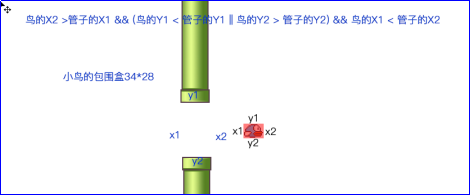
AABB盒，轴对齐包围盒也称为矩形盒，要自己会调试，将关键的数据fillText()渲染到界面上。
碰撞检测写在管子身上，因为管子很多，只需要检测有没有碰撞到那唯一的小鸟即可，没有for循环。
如果写在鸟身上，要用for循环遍历所有管子，一一检测。
六、场景管理器
游戏是有各种场景的：
① 欢迎界面
② 教学界面
③ 游戏界面
④ GameOver界面
l 场景管理器（SceneManager）的好处就是可以管理零碎的东西。
l Game类现在不再直接管理Bird、Background、Pipe、Land了。而是只管理场景管理器。
l 场景管理器负责管理其他类的实例化、更新渲染。
删除Game类所有的实例化、更新、渲染，然后创建场景管理器，并实例化场景管理器
继续引入图片资源：
this.R = {
...
"title" : "images/title.png",
"button_play" : "images/button_play.png",
"text_ready" : "images/text_ready.png",
"tutorial" : "images/tutorial.png",
"gameoverbg": "images/gameoverbg.png",
"b0" : "images/b0.png",
"b1" : "images/b1.png",
"b2" : "images/b2.png",
"b3" : "images/b3.png",
"b4" : "images/b4.png",
"b5" : "images/b5.png",
"b6" : "images/b6.png",
"b7" : "images/b7.png",
"b8" : "images/b8.png",
"b9" : "images/b9.png",
"b10" : "images/b10.png",
"b11" : "images/b11.png"
}3号场景：
window.SceneManager = function () {
//当前场景的编号
this.smNumber = 1;
// 初始化场景编号的方法
this.init(1);
this.bindEvent();
}
(function () {
//场景初始化方法
SceneManager.prototype.init = function(number) {
switch(number){
case 1:
// 1号场景
break;
case 2:
// 2号场景
break;
case 3:
// 3号场景：游戏的主场景
this.background = new Background(); //实例化背景类
this.land = new Land(); //实例化大地类
this.bird = new Bird(); //实例化小鸟类
break;
}
}
//场景渲染方法
SceneManager.prototype.render = function () {
//这里才是真正的渲染方法，可以写动画，因为game类里面render此方法了
switch (this.smNumber) {
case 1:
break;
case 2:
break;
case 3:
// 渲染 和 更新背景
this.background.render();
this.background.update();
// 每间隔100帧，实例化一根管子
game.f % 100 == 0 && new Pipe(); //实例化管子类
// 循环遍历管子数组，更新和渲染管子类
for(var i = 0; i < game.pipeArr.length;i++){
game.pipeArr[i].render();
game.pipeArr[i].update();
}
// 渲染 和 更新大地类
this.land.render();
this.land.update();
// 渲染 和 更新小鸟类
this.bird.render();
this.bird.update();
break;
}
}
})();修改碰撞检测：
if(game.sm.bird.x2 > this.x1 && ( game.sm.bird.y1 < this.y1 || game.sm.bird.y2 > this.y2 ) && game.sm.bird.x1 < this.x2) { }
3号场景事件：
SceneManager.prototype.bindEvent = function(){
var self = this;
game.canvas.onmousedown = function(e){
//添加事件监听，要根据当前场景是几号，触发对应的场景事件
switch(self.smNumber){
case 1:
break;
case 2:
break;
case 3:
self.bird.fly();
break;
case 4:
break;
}
}
}以上是全是3号场景业务，都已经完成。
1号场景：
//场景初始化方法
//不管什么时候来到这个场景，此时都有一个默认就位状态
//我们动画是可以重复的，但是这个函数不是每帧执行。
SceneManager.prototype.init = function(number) {
//init中只有一个初始化参数，不要涉及到运动
switch(number){
case 1:
// 1号场景：游戏封面和开始按钮场景的初始化
this.background = new Background(); //实例化背景类
this.land = new Land(); //实例化大地类
this.titleY = -48; //初始化title位置
this.titleYTarget = 120; //title停留的位置
this.buttonY = game.canvas.height; //初始化按钮的位置
this.buttonYTarget = 360; //按钮停留的位置
this.birdY = 180; //初始化小鸟的位置
this.birdD = "down"; //小鸟的运动方向
break;
case 2:
// 2号场景
break;
case 3:
// 3号场景：游戏的主场景
this.background = new Background(); //实例化背景类
this.land = new Land(); //实例化大地类
this.bird = new Bird(); //实例化小鸟类
break;
}
}
//场景渲染方法
SceneManager.prototype.render = function () {
//这里才是真正的渲染方法，可以写动画，因为game类里面render此方法了
switch (this.smNumber) {
case 1:
// 1号场景：游戏封面和开始按钮场景的更新和渲染
// 渲染 和 更新背景
this.background.render();
this.background.update();
// 渲染 和 更新大地类
this.land.render();
this.land.update();
//渲染title图片
game.ctx.drawImage(game.R["title"],(game.canvas.width-178)/2,this.titleY);
game.ctx.drawImage(game.R["button_play"],(game.canvas.width-116)/2,this.buttonY);
game.ctx.drawImage(game.R["bird1_2"], (game.canvas.width - 48) / 2, this.birdY);
//title下降运动到目标位置
this.titleY += 2;
if(this.titleY > this.titleYTarget){
this.titleY = this.titleYTarget;
}
//按钮上升运动到目标位置
this.buttonY -= 5;
if (this.buttonY < this.buttonYTarget) {
this.buttonY = this.buttonYTarget;
}
//小鸟不停的上下运动
if(this.birdD == "down") {
this.birdY += 2;
if (this.birdY > 260){
this.birdD = "up";
}
} else if (this.birdD == "up"){
this.birdY -= 2;
if (this.birdY < 170) {
this.birdD = "down";
}
}
break;
case 2:
break;
case 3:
...
break;
}
}
//事件监听方法
SceneManager.prototype.bindEvent = function () {
//根据当前场景触发事件
var self = this;
game.canvas.onmousedown = function(e) {
//鼠标点击的坐标位置
var x = e.offsetX;
var y = e.offsetY;
switch (self.smNumber) {
case 1:
//1号场景：游戏封面和开始按钮场景的初始化
//得到按钮的上下左右包围盒
var left = (game.canvas.width - 116) / 2
var right = (game.canvas.width - 116) / 2 + 116;
var up = self.buttonYTarget;
var down = self.buttonYTarget + 60;
if(x >= left && x <= right && y <= down && y >= up){
//点击进去2号场景
self.smNumber = 2;
self.init(2);
}
break;
case 2:
break;
case 3:
break;
}
}
}以上，1号场景完成。
2号场景：
2号场景init初始化：
SceneManganer.prototype.init = function(number) {
switch (number) {
case 1:
...
break;
case 2:
// 教学 场景
this.background = new Background();
this.land = new Land();
this.readyY = -62; //2号场景的ready图片
// 修改 tutorial 的透明度
this.tutorial = 1
this.tutorialD = "A"
break;
case 3:
...
break;
case 4:
...
break;
}
};
2号场景render渲染方法：
//场景渲染方法
SceneManager.prototype.render = function () {
//这里才是真正的渲染方法，可以写动画，因为game类里面render此方法了
switch (this.smNumber) {
case 1:
...
break;
case 2:
// 2号场景：教学场景
this.background.render();
this.background.update();
// 渲染 和 更新大地类
this.land.render();
this.land.update();
//渲染title图片
game.ctx.drawImage(game.R["text_ready"],(game.canvas.width-196)/2,this.readyY)
game.ctx.drawImage(game.R["bird0_1"],100,180);
this.readyY += 2;
if (this.readyY > this.readyYTarget) {
this.readyY = this.readyYTarget;
}
game.ctx.save();
//让一个物体闪烁
if(this.tutorialD == "A"){
this.tutorial -= 0.04;
if(this.tutorial < 0.1){
this.tutorialD = "B"
}
}else if(this.tutorialD == "B"){
this.tutorial += 0.04;
if(this.tutorial > 1){
this.tutorialD = "A"
}
}
// ctx.globalAlpha改变透明度的API
game.ctx.globalAlpha = this.tutorialOpacity;
game.ctx.drawImage(game.R["tutorial"], (game.canvas.width - 114) / 2, 250);
game.ctx.restore();
break;
case 3:
...
break;
case 4:
...
break;
}
}
2号场景bindEvent监听事件方法：
//事件监听方法
SceneManager.prototype.bindEvent = function () {
//根据当前场景触发事件
var self = this;
game.canvas.onmousedown = function(e) {
//鼠标点击的坐标位置
var x = e.offsetX;
var y = e.offsetY;
switch (self.smNumber) {
case 1:
break;
case 2:
//2号场景
var left = (game.canvas.width - 114) / 2
var right = (game.canvas.width - 114) / 2 + 114;
var up = 250;
var down = 350;
if (x >= left && x <= right && y <= down && y >= up) {
//点击进去2号场景
self.smNumber = 3;
self.init(3);
}
break;
case 3:
//3号场景：游戏的主场景
self.bird.fly();
break;
}
}
}4号场景：
4号场景init方法
SceneManager.prototype.init = function(number) {
//init中只有一个初始化参数，不要涉及到运动
switch(number){
case 1:
break;
case 2:
break;
case 3:
break;
case 4:
//4号场景：死亡场景
//红色边框图片的透明度
this.GameOverBg = 1;
//小鸟落地死亡的爆炸动画初始化图片编号
this.boom = 0;
break;
}
}碰撞检测死亡，进入4号场景：
//碰撞检测
if (game.sm.bird.x1 < this.x2 && game.sm.bird.x2 > this.x1 && (game.sm.bird.y1 < this.y1 || game.sm.bird.y2 > this.y2)){
//死亡之后，进入4号场景（小鸟下坠）
document.getElementById("die").play();
game.sm.smNumber = 4;
game.sm.init(4);
return;
}else if(!this.isScore && game.sm.bird.x1 > this.x2){
// 这里是记分，条件就是把是否加分的true或false给管子身上
this.isScore = true;
game.sm.score++;
document.getElementById("score").play();
}4号场景render渲染方法：
//场景渲染方法
SceneManager.prototype.render = function () {
switch (this.smNumber) {
case 1:
...
break;
case 2:
break;
case 3:
...
break;
case 4:
// 让所有的物体静止，只渲染，不更新（update不用调用了）
this.background.render();
this.land.render();
for (var i = 0; i < game.pipeArr.length; i++) {
game.pipeArr[i].render();
}
this.bird.render();
// 让鸟急速下降
this.bird.y += 10;
//播放声音
document.getElementById("down").play();
// 保证鸟头朝下掉
this.bird.deg += 0.5;
if (this.bird.deg > 1.57){
this.bird.deg = 1.57;
}
//撞击地面产生爆炸动画，并且小鸟飞升
if(this.bird.y > game.canvas.height - 112 - 17){
//小鸟撞地停留在原位
this.bird.y = game.canvas.height - 112 - 17;
game.f % 2 == 0 && this.boom++;
if (this.boom >= 11) {
//清空管子数组和分数，为下一回合准备
game.pipeArr = [];
this.score = 0;
//回到1号场景
this.smNumber = 1;
this.init(1);
this.boom = 5;
// clearInterval(game.timer); //停止游戏主循环
}
//渲染爆炸动画
game.ctx.drawImage(game.R["b" + this.boom], this.bird.x - 50, this.bird.y - 100);
}
//渲染红色边框
this.GameOverBg -= 0.03;
if(this.GameOverBg < 0){
this.GameOverBg = 0;
}
game.ctx.save()
game.ctx.globalAlpha = this.GameOverBg;
game.ctx.drawImage(game.R["gameoverbg"],0,0,game.canvas.width,game.canvas.height)
game.ctx.restore();
break;
}
}Bird.prototype.update = function(){
this.y += this.dy; //下降的速度
this.deg += 0.08;
if(this.deg > 1.57){
this.deg = 1.57;
}
//掉地死亡
if(this.y > game.canvas.height - 112){
document.getElementById('die').play();
game.sm.smNumber = 4;
game.sm.init(4);
}
}添加键盘事件和声音、分数：
<audio src="music/die.ogg" id="die"></audio>
<audio src="music/down.ogg" id="down"></audio>
<audio src="music/fly.ogg" id="fly"></audio>
<audio src="music/score.ogg" id="score"></audio>
<canvas id="canvas" width="414" height="650" tabindex="1"></canvas>写在bindEvent里：
ame.canvas.onkeydown = function(e){
switch(self.smNumber){
case 3:
if(e.keyCode == 32){
self.bird.fly();
}
break;
}
}
game.canvas.focus();七、Canvas动画
让元素在canvas上运动，需要使用定时器。
canvas使用了一个特殊的模式，上画布的元素，立刻被像素化。也就是说，上画布的元素，你将得不到这个“对象”的引用。比如，一个圆形画到了画布上面，此时就是一堆的像素点，不是一个整体的对象了，你没有任何变量能够得到这个对象，改变这个对象的属性。也就是说，这种改变的思路在canvas中是行不通的。
要实现动画，必须：每帧重新画一个。
所以，canvas的画图原理是：
清屏 → 重绘 →清屏 → 重绘 →清屏 → 重绘 →清屏 → 重绘 →清屏 → 重绘 →清屏 → 重绘 →
清屏 → 重绘 →...
注意：千万不要将得到的Canvas和ctx放到init中，因为new一个球，来一个定时器得到一个Canvas画布。
7.1小球反弹
var canvas = document.querySelector("canvas");
var ctx = canvas.getContext("2d");
function Ball(x,y,r){
//传入小球的属性，x和y表示小球left和top的位置
this.x = x;
this.y = y;
this.r = r;
//当增量的dx、dy都为0的时候再随机一次
do{
this.dx = parseInt(Math.random() * 18) - 9;
this.dy = parseInt(Math.random() * 18) - 9;
}while(this.dx == 0 || this.dy == 0);
//随机颜色
var colors = ['#f90','#ff0','#09c','#c06','#F99','#9c3','#6cc','#9cc'];
this.color = colors[parseInt(Math.random() * colors.length)]
arr.push(this); //将小球的实例放进数组
}
//渲染方法，画一个小球
Ball.prototype.render = function(){
ctx.beginPath();
ctx.arc(this.x, this.y, this.r, 0,Math.PI * 2 ,false);
ctx.fillStyle = this.color;
ctx.fill();
}
Ball.prototype.update = function(){
this.x += this.dx;
this.y += this.dy;
if(this.x >= canvas.width - this.r || this.x <= this.r){
this.dx = -this.dx
}
if(this.y >= canvas.height - this.r || this.y <= this.r){
this.dy = -this.dy;
}
}
var arr = [];
var f = 0;
//开始定时器，每一帧清屏、更新、渲染所有小球
setInterval(function(){
f++;
//清屏
ctx.clearRect(0, 0, canvas.width, canvas.height);
//渲染
for(var i = 0;i < arr.length;i++){
arr[i].render();
arr[i].update();
}
ctx.font = "18px 微软雅黑";
ctx.fillStyle = "blue";
ctx.fillText(f, 10, 20)
},20);
var count = 60;
while(count--){
new Ball(100,100,20);
}
7.2炫彩小球
var canvas = document.querySelector("canvas");
var ctx = canvas.getContext("2d");
canvas.width = document.documentElement.clientWidth;
canvas.height = document.documentElement.clientHeight;
function Ball(x,y,r){
//传入小球的属性，x和y表示小球left和top的位置
this.x = x;
this.y = y;
this.r = r;
//当增量的dx、dy都为0的时候再随机一次
do{
this.dx = parseInt(Math.random() * 18) - 9;
this.dy = parseInt(Math.random() * 18) - 9;
}while(this.dx == 0 || this.dy == 0);
//随机颜色
var colors = ['#f90','#ff0','#09c','#c06','#F99','#9c3','#6cc','#9cc'];
this.color = colors[parseInt(Math.random() * colors.length)]
arr.push(this); //将小球的实例放进数组
}
//渲染方法，画一个小球
Ball.prototype.render = function(){
ctx.beginPath();
ctx.arc(this.x, this.y, this.r, 0,Math.PI * 2 ,false);
ctx.fillStyle = this.color;
ctx.fill();
}
Ball.prototype.update = function(){
this.x += this.dx;
this.y += this.dy;
this.r--;
if(this.r <= 0){
this.goDie();
}
if(this.x >= canvas.width - this.r || this.x <= this.r){
this.dx = -this.dx
}
if(this.y >= canvas.height - this.r || this.y <= this.r){
this.dy = -this.dy;
}
}
Ball.prototype.goDie = function(){
for(var i = arr.length-1; i >= 0; i--){
if(arr[i] == this){
arr.splice(i,1); //从数组第i项，删除一项
}
}
}
var arr = [];
var f = 0;
setInterval(function(){
f++;
//清屏
ctx.clearRect(0, 0, canvas.width, canvas.height);
//渲染
for(var i = 0;i < arr.length;i++){
arr[i].render();
arr[i].update();
}
ctx.font = "18px 微软雅黑";
ctx.fillStyle = "blue";
ctx.fillText(f, 10, 20)
},20);
canvas.onmousemove = function(e){
new Ball(e.offsetX,e.offsetY, 30);
}